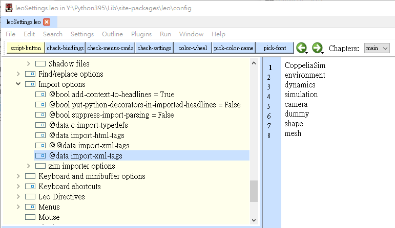
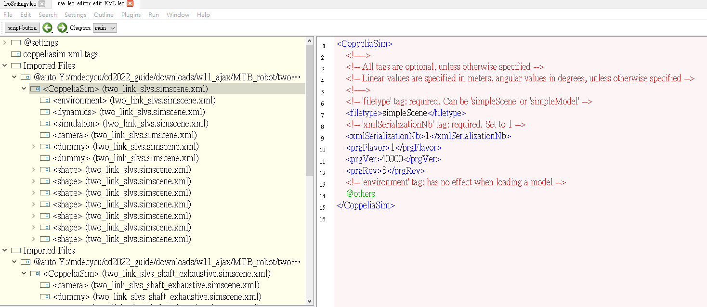

run_journal <<
Previous Next >> XML
w11 任務
解決協同設計流程中的倉儲衝突
當各組學員對組長帳號下的分組倉儲具備協同管理權限後, 各學員可以 git 採非同步協同設計, 對組長帳號下的分組倉儲進行改版, 其間不免要設法以手動方式解決 config/content.htm 動態超文件中的衝突.
以下影片就是利用動態網頁系統中的 Search 與 Edit All 設法找出帶有衝突起點、中線與衝突終點的超文件範圍, 然後根據協同設計整體需求解決衝突後, 新增、提交並推送新版本.
至於各學員帳號下 fork 的分組倉儲, 則可以透過逆向 Pull Requests 設法與組長帳號下的分組倉儲保持同步, 並設定 Github Pages 呈現各組員帳號下的分組倉儲靜態網頁.
CoppeliaSim 場景可以存為 exhaustive format 與 simple format 等兩種 XML 格式的純文字檔案. 意即使用者應該有機會可以根據這兩種 XML 格式中的語法, 透過程式方法建立所需的模擬場景.
假如希望利用 Leo Editor 處理 CoppeliaSim XML 格式場景, 可以參考這裡的說明. 將 CoppeliaSim XML 格式的純文字文字場景 import 進入 Leo Editor 編輯環境.
Leo Editor File -> Import Files 可以導入 .simscene.xml 場景檔案, 但解讀 XML 節點的設定位於 Leo Editor 系統 Settings -> LeoSettings.leo 檔案中的 @data import-xml-tags. 下列設定以 CoppeliaSim, environment, dynamics, simulation, camera, dummy, shape 與 mesh 作為第一階節點 tags.

在上述 @data import-xml-tags 場景節點的設定下, import MTB 機械手臂的 Leo Editor 畫面, 分別導入 simple 與 exhaustive 格式的場景.

除了 Leo Editor 也可以使用 XmlNotepad 編輯 XML 格式場景 (XmlNotepad.7z).
run_journal <<
Previous Next >> XML